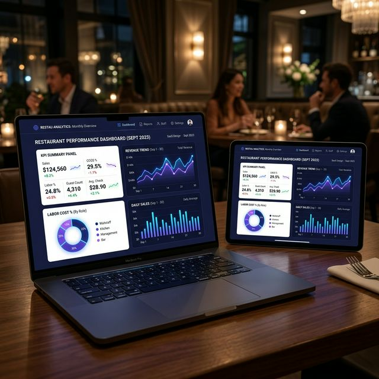
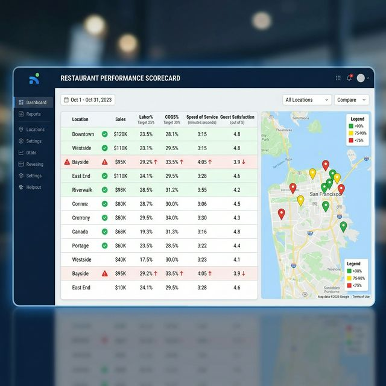

Trusted by 100,000+ restaurant professionals across the globe


Put your finger on the pulse of your restaurant from anywhere. Within seconds, uncover insights from billions of records — find out what happened, why it happened, and exactly what to do about it.

Trusted by 100,000+ restaurant professionals across the globe
Stop waiting for end-of-day reports. Get answers in seconds — from sales trends and labor ratios to theft alerts and speed of service.
From single-location owners to enterprise chains, Altametrics gives every level of your organization the data they need to act decisively.
Traditional reporting tells you what happened yesterday. Altametrics tells you what's happening right now — and what's about to go wrong — so you can act before problems compound.
"My Hong Kong team can opt to see all their business intelligence reporting in US dollars and that reporting is done on the fly to make it very valuable for the team in that market."— Multi-Unit Franchise Operator, Asia-Pacific Region
The DAR gives managers a complete picture of every shift: sales, labor numbers, speed of service, and comp/void activity — all consolidated into a clean, mobile-first view that requires zero configuration.
Restaurant theft and shrinkage cost the industry billions annually. Altametrics' real-time exception analysis and cash reconciliation give you airtight control — across every shift, every register, every location.
"What Altametrics business intelligence is doing for my operators is telling them where they need to put most of their attention. That is a tool that doesn't exist anywhere else. Everyone should use it."— Regional Director of Operations, QSR Franchise Group
Get the power of a full data department with a fraction of the investment. Our drag-and-drop report builder lets you mix POS, labor, and inventory data without writing a single line of SQL.
From a single store to thousands of locations, every manager in your organization gets the right data for their level. Regional leaderboards, automated benchmarks, and departmental scorecards drive sustainable growth at scale.

The answers to all your questions are finally here — no data science degree required.
Identify top revenue drivers, create a clear vision for your entire company, and plan for any business condition using unified data from every corner of your operation.
We love reports as much as you do. That's why creating your own is so easy. Fully transparent operational reports, data you can export, and automated subscriptions that save hours every week.
Identify the most popular dishes, understand customer preferences, pinpoint which items drive margins, and spot the combinations of dishes and staff that turn tables fastest.
Get insights into staff performance and scheduling needs. Know when to add coverage and when to cut — all driven by real-time sales data, not gut instinct or yesterday's numbers.
See exactly why the world's largest restaurant chains rely on Altametrics reporting to protect profitability.
Hear from the operators who rely on Altametrics reporting to run smarter restaurants.
"The ability to manage all operating metrics like food and labor costs makes it easier for us to provide benchmarking and support to our franchisees. Altametrics reporting pays for itself every month."

"As a franchise company, we need to know what all the sales are in our stores so Altametrics Business Intelligence was able to develop a system that could get that information for us, near-instantly."

"Altametrics BI tells my operators where they need to put most of their attention. That is a tool that doesn't exist anywhere else. The ROI was evident within the first 90 days."

Common questions about Altametrics restaurant reporting & business intelligence.
Restaurant BI helps you optimize operations, improve guest satisfaction, increase revenue and profitability, and make informed business decisions faster. Without BI, operators are reacting to yesterday's problems; with Altametrics, you see them coming in real-time and prevent them before they impact your bottom line.
Altametrics consolidates data from your POS system, inventory management, employee time clocks, online ordering platforms, third-party delivery apps, and customer feedback tools. With 500+ integrations, there are virtually no data silos left in your operation.
Altametrics identifies your most popular dishes, analyzes profitability by menu item, and highlights the combinations of items that drive the highest throughput. This helps you make data-driven decisions about promotions, limited-time offers, pricing adjustments, and menu engineering to maximize margins.
Our Cash Office module automatically pulls end-of-shift POS totals and compares them to physical cash counts reported by managers. Any discrepancy triggers an automatic alert. On the exception side, every void, refund, discount, and comp is analyzed against configurable thresholds and flagged in real-time so managers can investigate before a shift ends.
Absolutely. Our drag-and-drop report builder gives any manager the power of a data department without IT support. Choose from 350+ pre-built templates or build from scratch by dragging data fields onto a canvas. Schedule reports to be delivered automatically to any email or push notification, and export to Excel or PDF with one click.
Join 100,000+ restaurant professionals who make smarter decisions with Altametrics every day.
Request a Personalized Demo